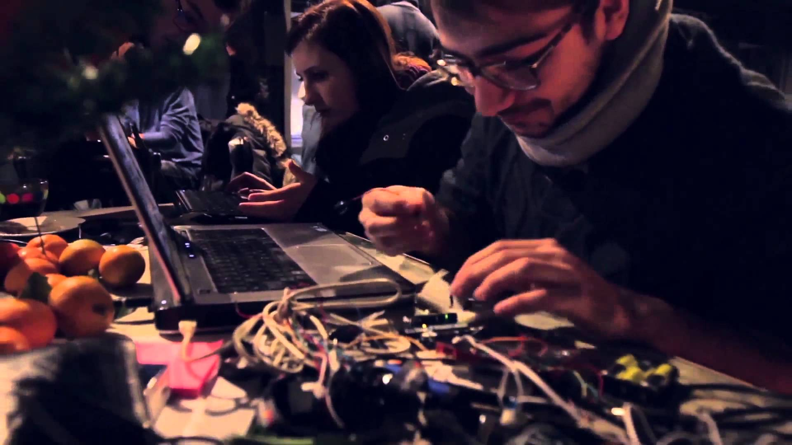

Frequently Asked Questions
What does Intrusive exactly do?
As a nonprofit cybersecurity group targeting high school students, we aim to bring awareness to the information security and penetration testing fields within technology through open-sourced software, monthly conferences and meetups, starting CTF (Capture-the-Flag) competitions, writing and blogging, as well as recruiting and meeting new AND experienced technologists!
What if I'm not from the New York City area? Can I still be a part of Intrusive?
Yes! While Intrusive is NYC-based at the moment, we want to expand our organization so that it reaches all students around the world. While we currently host events within the Greater NYC area, we still hope to make them accessible to you through social media, livestreaming, and a TBA Intrusive meetup platform for hackers all around the world!
What about sponsors? How can my company/non-profit help Intrusive?
We love sponsors and we willing to accept any that want to help our cause in any way possible. Please check the Sponsors section of our website, or email sponsors@intrusive.tech.

What is the story behind Intrusive?
While there is a strong presence of opportunities for high school developers and hackers to shine and learn, there aren't many for those with interests in information security. Our goal ever since the beginning of the group's conception was to provide this opportunity to anybody wanting to learn more or dive into the field of cybersecurity, and pick up some new skills for their future. We don't care about race, ethnicity or religion - cybersecurity is for everyone.